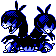
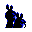

#153
Zweilous
DarkDragon
Its two heads do not get along and fight over food It eats until the area around it is bare
Base stats Total 350
HP72
Attack85
Defense70
Speed58
Special65
Details
- Species
- Hostile
- Height
- 4'07"
- Weight
- 110.2 lb
- Catch rate
- 45
- Base exp
- 147
- Growth
- Slow
Level-up moves
LevelMoveType
StartTackleNormal
StartBiteDark
StartDragon RageDragon
Lv 9BiteDark
Lv 13HeadbuttNormal
Lv 18Dragon RageDragon
Lv 24CrunchDark
Lv 29Body SlamNormal
Lv 32Dragon ClawDragon
Lv 40OutrageDragon
TM / HM
TM04 CrunchTM06 ToxicTM08 Body SlamTM09 Take DownTM23 Dragon RageTM32 Double TeamTM44 RestTM45 Thunder WaveTM50 SubstituteHM04 Strength